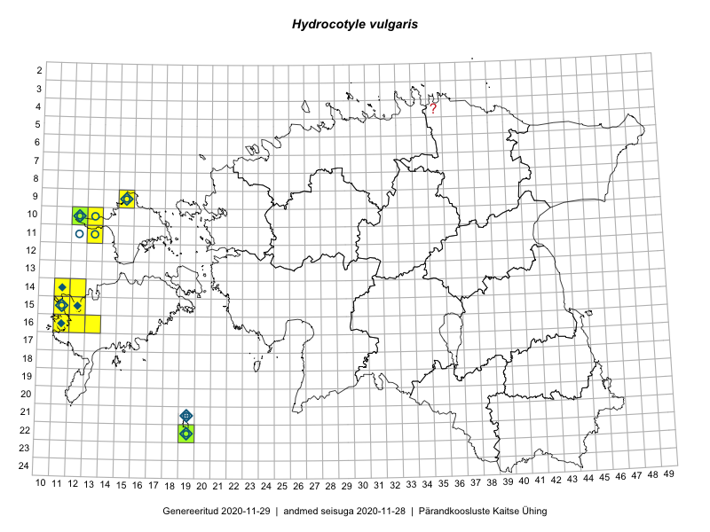

Hydrocotyle vulgaris
Uuendatud: 2016-12-01
Kaardile koondatud taksonid: Hydrocotyle vulgaris L.

Kaart põhineb 20 kirjel.
Viited andmebaasikirjetele
- Mari Reitalu, Oliver Parrest: 2015-07-14: 14-11: ala
- Mari Reitalu, Oliver Parrest: 2015-07-14: 15-12: ala
- Mari Reitalu, Oliver Parrest: 2015-07-14: 14-12: ala
- Mari Reitalu, Oliver Parrest: 2015-07-16: 15-11: ala
- Mari Reitalu, Oliver Parrest: 2015-07-14: 15-12: GPS punkt
- Mari Reitalu, Oliver Parrest: 2015-07-14: 14-11: GPS punkt
- Oliver Parrest, Mari Reitalu: 2015-07-14: 14-12: GPS punkt
- Oliver Parrest, Mari Reitalu: 2015-07-16: 15-11: GPS punkt
- Thea Kull, Peedu Saar: 2016-08-10: 11-13: ala
- Maret Gerz, Sander Laherand: 2016-08-10: 10-12: GPS punkt
- Maret Gerz, Sander Laherand: 2016-08-10: 10-12: GPS punkt
- Peedu Saar, Thea Kull: 2016-08-10: 11-13: GPS punkt
- Ott Luuk, Meeli Mesipuu: 2016-09-10: 22-19: ala
- Mari Reitalu, Triin Reitalu: 2016-09-02: 16-11: GPS punkt
- Meeli Mesipuu, Toomas Kukk, Mari Reitalu: 2016-10-07: 15-11: ala
- Toomas Kukk, Meeli Mesipuu, Mari Reitalu: 2016-10-07: 15-11: GPS punkt
- Toomas Kukk, Meeli Mesipuu, Mari Reitalu: 2016-10-07: 15-11: GPS punkt
- Meeli Mesipuu, Ott Luuk: 2016-09-11: 22-19: GPS punkt
- Meeli Mesipuu, Ott Luuk: 2016-09-11: 22-19: GPS punkt
- Meeli Mesipuu: 2014-08-24: 14-11: GPS punkt